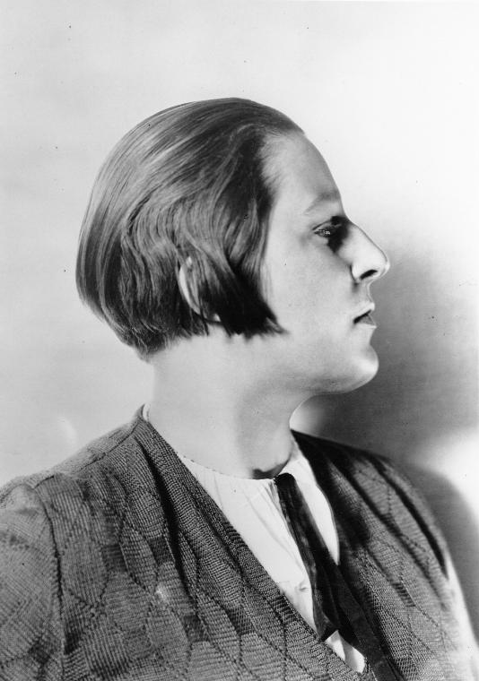
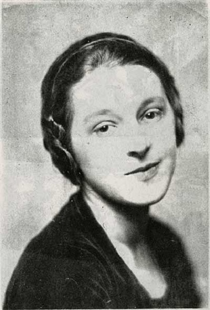
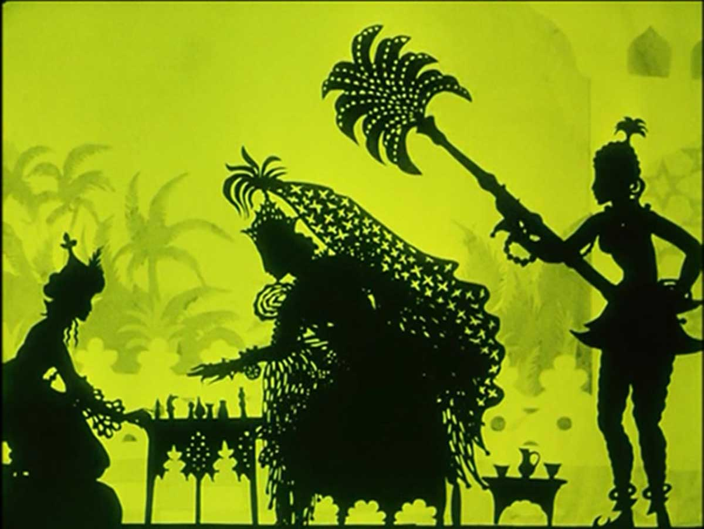
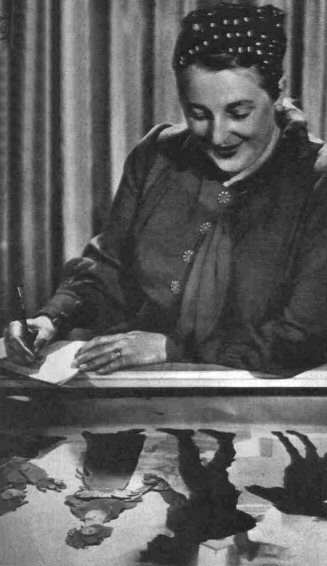
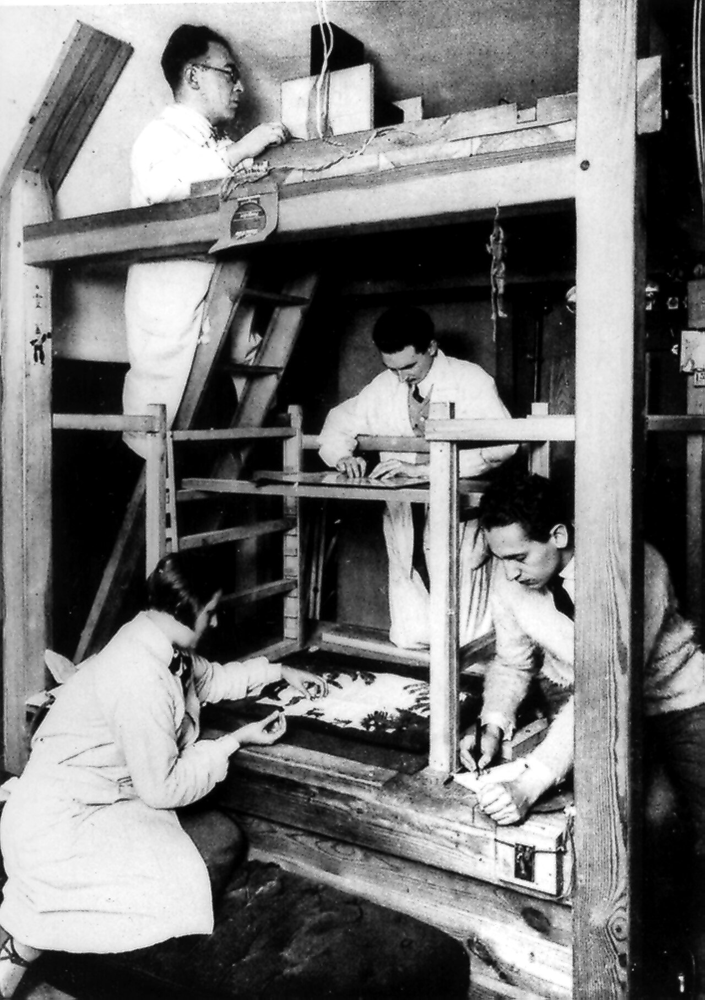

Lotte Reiniger - A Pioneer Among Pioneers
Lotte Reiniger (1899 - 1981) was a German born animator and one of the most important figures in the devlopment of the medium. She's well known for her use of shadow silhouettes in what came to become her distinctive style. Her accolades include both the devlopment of the multiplane camera, one of the largest innovations in technology within the artform at its time, and the creation of the first documented feature length animation with "The Adventures of Prince Achmed" (1926). Over 100 years later, her contributions and influence on the world of animation cannot be understated. Reiniger, a woman in a largely male domminated field, was always at the forefront of her practice in terms of craft and dedication. A century later, she still serves as an inspriation to artists across the world.
Life and Times
During her early career in the 1920's Reiniger beame immerised in the world of avant-garde film, working closely with fellow experimental animator Walther Ruttmann. She prduced many of her earliest films, such as "The Ornament of Hearts in Love "(1919) and "The Flying Suitcase" (1921) though Germany's institute for Cultural Reserch were she would also meet her frequent collaberator and future husband, Carl Koch.


Amoung her many aclaimed works was "The Adventures of Prince Achmed" (1926), which stands as the first animated feature film ever created. The movie was a retelling of stories from a 1001 Arabian Night sporting a unqiue shadow puppet styling that took much insperation from her time visitng in Egypt and Greece. Most striking perahsp is the film's rich color and sense of depth in a flat space, provided largely from utilization of the multiplane, a camera addition she forged the creation of. During this time, see also was active in the realm of live proformance and puppetry.
At the start of World War II, Reiniger sought to flee Nazi Germany, largely due to blow-back she recieved towards her movie collaberators and subject matter. Her and her husband emigrated to several countries wishing to back their work including Italy, England, France, and Canada. The scattered nature of their practice has left some of Reiniger's work lost to time, but effort was been put into perserving large swats of her film, and her legacy carried on till the end of her life and far beyond.

The Multiplane

The multiplane camera is a cinema rig that was used in tradtional forms of animation for a greater sense of a depth within 2D space. Taking note of the layered shadowing techniques used in Chinese shadow-puppetry, Reinger and Koch created the first version of the device. The setup was highly innovative for its time, allowing for motion parrallaxing that made drawn and cutout worlds feel extremely lived in. Credit for it's creation is often attributed to the Walt Disney company, however, while they did expand upon and improve the technique. Reinger had forged is almost a full decade before hand.